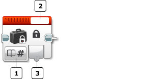
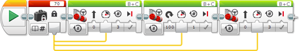

					<table cellpadding="0" cellspacing="0" border="0"><tbody><tr><td>
	
						<h1>常量模块<a name="top"></a></h1>
		<div id="block_477" class="block blockHeader">
				<table cellspacing="0" cellpadding="0" border="0">
			<tbody><tr>
				<td valign="top" class="image"></td>
				<td valign="top" class="description"><div class="text-wrapper">常量模块允许您输入可以在程序中几个不同位置使用的值。如果更改常量值，则使用常量的所有位置都会获得更新的值。</div></td>
			</tr>
		</tbody></table>
			</div>
	<div id="block_479" class="block blockChaptor">
		<div class="title"><a name="UsingAConstant" style="position:relative; top:-10px;"></a>使用常量</div>
		<div class="description"><br>
<br>
 模式选择器 <br>
 模块文本字段<br>
 输出<br>
<br>
使用模式选择器可为常量选择类型。有关不同类型的更多信息，请参见<a href="./index.html?id=DataTypes">数据类型</a>。</div>
	</div>
	<div id="block_1364" class="block blockChaptor">
		<div class="title"><a name="Modes" style="position:relative; top:-10px;"></a>模式</div>
		<div class="description"></div>
	</div>
	<div id="block_1362" class="block blockMode">
		<div class="title"><a name="Mode_Text" style="position:relative; top:-10px;"></a>文本 － 数字 － 逻辑 － 数字排列 － 逻辑排列 <a name="Mode_Numeric" style="position:relative; top:-10px;"></a>  <a name="Mode_Boolean" style="position:relative; top:-10px;"></a>  <a name="Mode_NumericArray" style="position:relative; top:-10px;"></a>  <a name="Mode_BooleanArray" style="position:relative; top:-10px;"></a></div>
		<div class="description">将常量的值输入到模块顶部的模块文本字段中。此值会输出到<a href="./index.html?id=Constant#valueOut">值</a>。</div>
	</div>
	<div id="block_480" class="block blockExample">
		<div class="title">示例</div>
		<div class="image"></div>
		<div class="description">此程序使用常量模块为三个不同移动转向模块提供“功率”输入。通过在常量模块中更改单个值，所有三个移动转向模块都会获得新更新的功率级别。</div>
	</div>
	<div id="block_481" class="block blockChaptor">
		<div class="title"><a name="InputsAndOutputs" style="position:relative; top:-10px;"></a>输入与输出 <a name="Parameters" style="position:relative; top:-10px;"></a></div>
		<div class="description">常量模块的输入在模块文本字段中输入。输出是模块中的常量值。要使用该输出，请使用<a href="./index.html?id=DataWires">数据线</a>将其连接到另一个编程模块。</div>
	</div>
	<div id="block_482" class="block blockTable ">
		<table class="blockTable">
		

			<tbody><tr>
<th>输入与输出</th><th>类型</th><th>备注</th>			</tr>
<tr><td>值 <a name="valueIn" style="position:relative; top:-10px;"></a></td><td>（取决于模块模式）</td><td>模块文本字段中的常量值</td></tr><tr><td>值 <a name="valueOut" style="position:relative; top:-10px;"></a></td><td>（取决于模块模式）</td><td>模块输出中的常量值</td></tr>		</tbody></table>
	</div>
	
			<div id="quick">
				<div class="header"><a href="./index.html?id=Constant#header">常量</a></div>
					<div class="quickText">快速链接</div>
					
					<ul>
	<li><a href="./index.html?id=Constant#UsingAConstant">使用常量</a></li><li><a href="./index.html?id=Constant#Modes">模式</a></li><li><a href="./index.html?id=Constant#InputsAndOutputs">输入与输出</a></li>					</ul>
			</div>
	
	</td></tr></tbody></table>